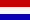
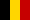
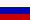

The History of
the European CW Association
Revision date 2021.03.10
The Chairmen of EuCW
 SMØIX Sven Milander c/o SCAG 1980
SMØIX Sven Milander c/o SCAG 1980
 DL7DO Ralf Herzer c/o AGCW 1981
DL7DO Ralf Herzer c/o AGCW 1981
 G8PG Gus Taylor c/o G-QRP 1982
G8PG Gus Taylor c/o G-QRP 1982
-  PAØDIN Din Hoogma c/o VHSC 1983
- SM5TK Kurt Franzén c/o SCAG 1984
- DL6MK Edgar Schnell (sk) c/o HSC 1985-1987
- G4FAI Tony Smith c/o G-QRP 1988-1990
-  ON5ME Oscar Verbanck (sk) c/o SHSC/EHSC
(*) 1991-2006
 LZ1PJ Ivan (Johny) Ivanov c/o LZCWC
2007-2013
LZ1PJ Ivan (Johny) Ivanov c/o LZCWC
2007-2013
- G5VZ Chris Pearson c/o FISTS 2013-2016
 I5SKK Alessandro Santucci c/o INORC 2016/9
to 2019/8
I5SKK Alessandro Santucci c/o INORC 2016/9
to 2019/8
- IZ2FME Michele Carlone c/o INORC 2019/9 to
2022/8
-  RM2D Mats Strandberg c/o UQRQ-C 2022/9 to
2025/8
Growth
History of EuCW (dates when new clubs joined)
- 1979
- EuCW founder clubs: SCAG (SM/OZ), AGCW (DL), GQRP (G).
- until 1981
- TOPS (G), SARS (Scarborough ARS)(G), HSC (DL), CWC (HB9), VHSC
(1981.11.28)(PAØ).
- 1982
- BQRPC (PA/ON/LX), INORC (I).
- 1983
- HCC (1983.09.01)(EA).
- 1986
- BTC (1986.02.15)(ON), UFT (1986.09.01)(F), SHSC (1986.12.01)(ON).
- 1988
- FISTS (1988.06.01)(G), U-QRQ-C (1988.12.03)(R).
- 1989
- FOC (1989.09.01)(G).
- 1990
- EHSC (ON).
- 1991
- HACWG (HA), U-CW-C (R/UR).
- 1992
- OK-QRP (OK), CTCW (CT).
- 1993
- HTC (HB9).
- 1994
- 3A-CW-G (3A), MCWG (Z3), OHTC (OH), EA-QRP-C (EA),
- 1995
- SPCWC (SP).
- 1997
- 9A-CWG (9A), I-QRP-C (I).
- 1998
- OE-CW-G (OE).
- 1999
- ITC (I), YL-CW-G (DL), RTC (DL).
- 2000
- GTC (SV).
- 2001
- CFT (ON).
- 2002
- EACW (EA).
- 2003
- CTC (9A).
- 2004
- LZCWC (2004.08.20)(LZ), RU-QRP (2004.12.22)(R).
- 2005
- IS-QRP (2005.09.21)(IS0).
- 2010
- Marconisti (2010.04.01)(I), Essex CW Club (G).
- 2018
- GPCW (2018.01.01)(CT).
Refoundation of CTCW
- 2018
- Long Island CW Club (2019.12.01)(W, Associated Club).
- 2021
- NTC - Netherlands Telegraphy Club
(PAØ, member since 2021-09-15)
Other Events in EuCW
- 1978
- SCAG took the first initiative. Statutes were proposed on
1978.06.27 (These statutes are re-printed in SCAG-NL #50 from April
1978). According to these statutes only clubs with at least 100
individual members could be members. The leadership of EuCW should
rotate on a yearly base.
- 1979
- EuCW founded officially.
- 1986
- CWC (HB9) deleted on 1986.02.15. SCAG leadership proposes
withdrawal of SCAG from EuCW (1986.03.01), to be decided by the
annual assembly. 1986.05.31: SCAG Assembly in Copenhagen postpones
decision about EuCW withdrawal. DL6MK encounters difficulties to find
a new EuCW president. TOPS, SARS, HCC, INORC could not take over
presidency. UFT proposes a EuCW award.
- 1987
- DJ2XP takes over the Fraternizing Party. The FP date changes from
June to late November. 1987.04.25: SCAG assembly in Täby gives
up plans for withdrawal from EuCW.
- 1988
- EuCW Net (80 m QTC net) established
- 1990
- TOPS withdraws from membership because of a lack of activity
(1990.07.01), the option to re-join remains open. Fraternal links to
non-European clubs established: QRP-ARCI (W/K) and GPCW (PY). The
SCAG Straight Key Day on New Year's Day becomes an official EuCW
activity.
- 1991
- Worked EuCW Award created (1991.04.27) to commemorate the 200th
anniversary of the birth of Samuel F.B. Morse. HCC (Spain) generously
met the cost of printing the certificates (in the UK), which were
designed by G4FAI. First award winner: DK9EA (1991.09.30). Generous
donations received from other clubs were reserved for use on future
EuCW special projects. CWAS (PY) associates as another overseas
guest. It takes over the tasks of GPCW (PY).
- 1992
- Membership rules were modified in order to open EuCW for small
clubs. The decision was taken by mail vote. 18 clubs were invited to
vote, 13 were in favor of the change, 1 disagreed, 1 agreed
conditionally, 3 clubs did not respond.
- 1993
- SLDXC (Saar-Lorraine DX club) applied for membership but was
vetoed down for being rather a DX club than a CW club. Well-defined
membership application policy established, all non-CW clubs and all
non-European clubs will be excluded from the application procedures.
QRP clubs will remain an exception because QRP is inherently linked
to CW. The Fraternizing Party gets an extra sponsorship from EA3DOS
who donates miniature ("Lilliput") keys to winners.
- 1994
- New statutes were adopted. Changes include: Clubs with at least
100 individual members will have FULL (i.e. voting) membership. Clubs
with 5 to 99 members will have RESTRICTED (i.e. non-voting)
membership. The term of office of chairmen is 3 years.
- 2000
- Membership application from CFT (Belgium) published in EuCW
Bulletin 2000/2. Likewise the GACW from Argentina offered
co-operation with EuCW. Proposal for a new constitution.
- 2001
- FISTS creates a new QRS Week and dedicates it to EuCW. First QRS
Week held in April 2001. UFT dedicates a 160m contest to EuCW.
- 2002
- Professional Radio Operators CW Club International from Romania
applied membership but was vetoed down.
- 2006
- DJ2XP retired from his post as EuCW AWARD and Fraternizing Party
manager. These jobs are taken over by DK7VW. Unfortunately, the
results of the 2005 Frat Party got lost in the takeover procedure.
LZ1PJ accepted to be the president of EuCW from 2007 on.
- 2007
- ON5ME passed away in January. He was an extraordinary sponsor in
general and EuCW in particular. His donations covered the running
costs of the presidency at 100% during his term of office.
Ivan Ivanov, LZ1PJ, took over as chairman, it was his merit to
introduce electronic media into the regular operation of the club.
- 2010
- The Essex CW ARC was presented as a new candidate for EuCW
membership. The membership was confirmed eventually.
- 2013
- The clubs OHCW, BTC, GACW, and HCC were declared dormant. The
term 2013-2016 of the chairman was offered to BQC. BQC chose not to
fill the office as Chairman. Elections for a new chairman are being
held in summer. G3VTT (ECM FOC) volunteered as election officer for
the 2013 elections. During the month of July potential candidates
were invited to present themselves for the election. Two candidates
were found.
During the month of August the elections were held. The winner was
G5VZ who took office in September.
After a consultation period the traditional contest EUCW Fraternising Party was discontinued. EUCW
thanked DK7VW for the good work done as Manager from 2006 to its
final edition in 2013. The consultation showed a declining interest
of EuCW club officials in a contest. In fact many realized that a
classical contest is hardly useful to foster friendship. Moreover,
there is no lack of contests on the HF bands and one more ore less
won't make too much of a difference. The chairman got the task to
order the different alternative proposals and come up with an on-air
activity far beyond contesting.
- 2014
- The long-term activity "Snakes And Ladders" was presented for the
time period April 2014 through March 2015. The basic idea is to
foster normal CW QSOs on the CW bands preferably on the upper parts
of the CW bands far away from contests and from pile-ups and DX
operation. A minimum duration of the QSO was set to 5 minutes in
order to promote a culture of conversation.
As an additional incentive a game of luck is presented based on the
QSOs of a calendar month. DM4RW could be won as manager of this
activity.
Though participation itself is as easy as providing an ADIF QSO list
the rules of the game of luck is a bit more sophisticated and harder
to read than a usual description of award or contest rules. A group
of enthusiastic ECMs provided the rules in at least TEN EUROPEAN
LANGUAGES. Never before in history of EUCW there was a project with
so many ECMs involved. Special thanks go to the main authors of the
language versions as listed in here.
The company Begali promised to sponsor two free keyers that will be
donated to two selected participants after the first of S+L.
S+L produced about 1000 QSOs per month which is a good start.
Updates for the version after March 2015 were decided. The appearance
of snakes was randomized, the role of the preferred frequencies was
emphasized.
- 2015
- Snakes and ladders version 2 was organized from March to
December.
- 2016
- Snakes and Ladders was upgraded to its third version. Friendship
between operators is now in the foreground. Even repetitive QSOs with
the same station contribute to the individual results.
Sadly the German club RTC became inactive and its web page and domain
were erased in April. Likewise the German YLCWG was declared dormant
since August.
On 1-SEP-2016 the new EUCW Chairman took office. This new three year
term is under the responsibility of INORC. INORC supports EUCW with
Alessandro, I5SKK as EUCW Chairman, and Italo, I0YQX, as ECM of
INORC.
- 2017
- Snakes and Ladders remained stable and created typically 1000
QSOs per month. The center of activity is in the United Kingdom.
- 2018
- Snakes and Ladders remained stable and well. CTCW and 3A-CWG
retracted their membership, EACW was declared dormant since there
were no news for years. CTCW was replaced by GPCW. First measures
were taken to prepare the succession of the chairman I5SKK. According
to the rotary principle UFT had the right of succession. UFT declined
early and the chairman launched a call for candidates for
chairmanship.
- 2019
- LZCWC was declared dormant in Jan 2019. No contact to the club
could be established by the chairman.
Two candidates volunteered for the chairmanship of the term Sept.
2019 through Aug. 2022. The candidates and their host clubs were
ON4LDL c/o CFT (Belgium) and IZ2FME c/o INORC (Italy). Elections were
held among the clubs with more than 100 active members.
On Sep 1, 2019 IZ2FME took office as EUCW chairman after winning the
elections.
- 2021
- The EUCW award manager passed away, the stock of paper awards
could not be recovered. The award is now digital and free of charge.
In November 2021 DF4WX volunteered as new award manager.
According the rotary principle of EuCW, the presidency was offered to
U-QRQ-C because it is the oldest member club which neither had a presidency
no rejected a presidency in the past. Eventually, the United QRP club
has chosen Mats, RM2D as chairman.
- 2022
-
On Sep 1, 2022 RM2D took office as EUCW chairman as appointed by
his club.
Notes:
This list is based on archives of AGCW-Info, SCAG-NL, and EuCW
Bulletins. Several friends helped (see acknowledgments below). Yet,
this list is incomplete and may contain errors. Please send
corrections or additional infos to:...eucw (at) agcw.de... Thanks in
advance.
Acknowledgments to contributors:
Corrections and updates came from: PAØDIN, ON5ME, DK5KE, G4FAI
(chronological order).
Privacy Policy